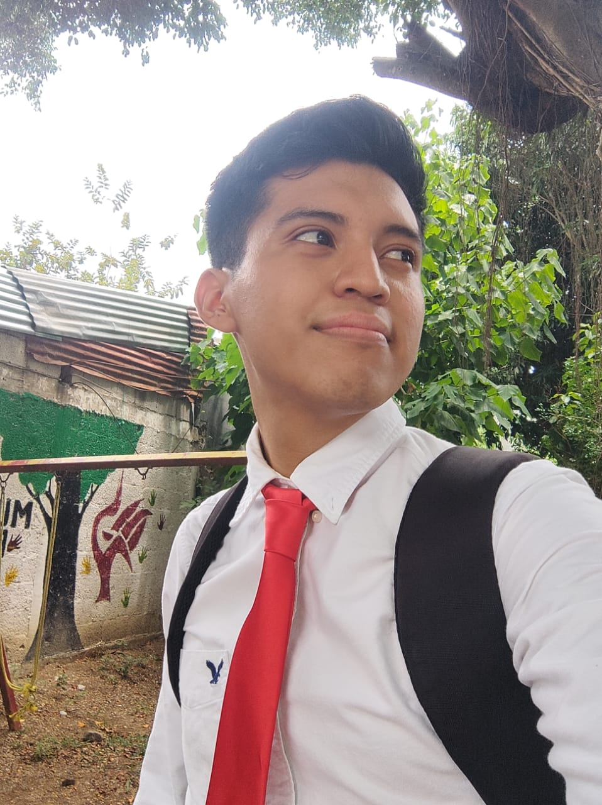

Oswaldo Yair Hernandez Santos
Desarrollador Web
Viaje antes que destino

Desarrollador Web
Viaje antes que destino
¡Hola! Soy Oswaldo Yair, un desarrollador web principiante, con cierta experiencia en Python, C++, C#, JavaScript. Durante mi carrera, he trabajado en diferentes proyectos realizando aplicaciones nativas de computadora como tambien paginas o sistemas web. Mi objetivo es crear soluciones web efectivas y atractivas que cumplan con las necesidades de mis clientes y usuarios.
El motivo de la creacion de este proyecto es como metodo de enseñanza al realizar una guia de desarrollo, utilizando herramientas como visual studio
El desarrollo de este proyecto consta en un sistema web con funcionalidades de buscador, donde se utiliza herramientas de desarrollo como laravel, entre otras

Es un gran programador respecto al backend, ademas de crear trabajos muy limpios
Trabaje con el un tiempo, por lo que es muy facil de entenderle por su comunicacion
Sus sistemas son muy limpios y faciles de entender